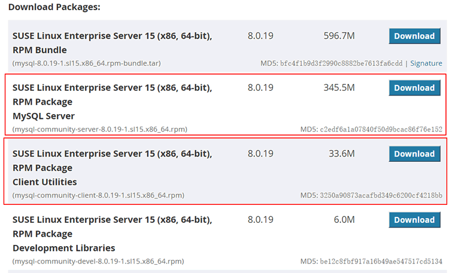

首页 > MySQL教程 > MySQL的安装和配置
对Linux MySQL软件包的一些说明
Linux 操作系统的发行版很多，不同发行版下的 MySQL 版本也是不同的。MySQL 主要支持的 Linux 版本有 Red Hat Enterprise Linux 和 SUSE Linux Enterprise Server。本节主要介绍不同 Linux 发行版下 MySQL 支持的版本。
Linux 操作系统的 MySQL 软件包一般分为以下 3 类：
这 3 类 MySQL 软件包的介绍如下：
除此之外，不同 Linux 发行版的 MySQL 软件包也是不一样的。下面是 Red Hat Enterprise Linux 和 SUSE Linux Enterprise Server 这两个发行版的 MySQL 软件包的介绍。
除了 RPM 包的版本以外，在 Red Hat Enterprise Linux 中还有 MySQL 二进制包和源码包。RPM 软件包、二进制软件包和源码包的安装方式是不一样的。RPM 包安装最容易，源码包安装最灵活。
读者可以在下载页面（https://dev.mysql.com/downloads/mysql/），选择 Red Hat Enterprise Linux 平台，下载服务器端和客户端。

读者可以在下载页面（https://dev.mysql.com/downloads/mysql/），选择 SUSE Linux enterprise Server 平台，下载服务器端和客户端。
其中，MySQL Server 代表服务器端的 RPM 包，为用户提供核心的 MySQL 服务。Clinet Utilities 代表客户端的 RPM 包，是连接 MySQL 服务的客户端工具，方便管理员和开发人员在服务器上进行各种管理工作。
如果你的 Linux 发行版支持 RPM 软件包，尽量选择 RPM 包进行安装。这种方式安装简单，且管理方便。
Linux 操作系统的 MySQL 软件包一般分为以下 3 类：
- RPM 软件包
- 二进制软件包
- 源码包
这 3 类 MySQL 软件包的介绍如下：
1）RPM
RPM 软件包的安装和卸载都很方便，它的服务器端（Server）软件和客户端（Client）软件都需要分开下载和安装。2）二进制软件包
二进制软件包是软件发布的时候已经进行过编译的软件包，安装速度比源码包快得多。3）源码包
源码包中是 MySQL 数据库的源代码，需要用户编译成二进制文件后才可以使用。除此之外，不同 Linux 发行版的 MySQL 软件包也是不一样的。下面是 Red Hat Enterprise Linux 和 SUSE Linux Enterprise Server 这两个发行版的 MySQL 软件包的介绍。
1）Red Hat Enterprise Linux 发行版
Red Hat Enterprise Linux 是红帽公司的产品。Red Hat Enterprise Linux 下的 MySQL 软件包大部分是 RPM 软件包。由于支持的处理器架构不一样，所以每个 Red Hat Enterprise Linux 版本下的 MySQL 软件包的版本也不同。除了 RPM 包的版本以外，在 Red Hat Enterprise Linux 中还有 MySQL 二进制包和源码包。RPM 软件包、二进制软件包和源码包的安装方式是不一样的。RPM 包安装最容易，源码包安装最灵活。
读者可以在下载页面（https://dev.mysql.com/downloads/mysql/），选择 Red Hat Enterprise Linux 平台，下载服务器端和客户端。
2）SUSE Linux Enterprise Server 发行版
SUSE Linux Enterprise Server 是德国 SuSE Linux AG 公司发行和维护的 Linux 发行版。该公司在 2004 年被 Novell 公司收购。和 Red Hat 一样，不同的处理器架构下 MySQL 的版本也不相同。读者可以在下载页面（https://dev.mysql.com/downloads/mysql/），选择 SUSE Linux enterprise Server 平台，下载服务器端和客户端。

其中，MySQL Server 代表服务器端的 RPM 包，为用户提供核心的 MySQL 服务。Clinet Utilities 代表客户端的 RPM 包，是连接 MySQL 服务的客户端工具，方便管理员和开发人员在服务器上进行各种管理工作。
拓展
除了上述两个 Linux 的发行版以外，还有其他 Linux 发行版，例如比较流行的 Fedora、Ubuntu 和 CentOS 等。还有国内比较好的 Linux 发行版，如红旗、中标普华等。这些 Linux 发行版上都可以安装 MySQL 数据库。下面是常用的 Linux 版本和推荐的 MySQL 版本，如下表所示。选择 Linux 版本的 MySQL 时，首先要确定自己 Linux 的版本。确定版本后，再根据自己电脑的硬件选择相应的版本。如果有相应的 RPM 软件包，最好选择 RPM 软件包。如果没有相应的 RPM 软件包和二进制软件包，那只能使用源码包进行安装。
| Linux 版本 | 推荐安装的MySQL版本 |
|---|---|
| Red Hat Enterprise Linux | RPM软件包 |
| SUSE Linux Enterprise Server | RPM软件包 |
| Fedora | RPM软件包 |
| Ubuntu | 源码包 |
| CentOS | RPM软件包 |
关注公众号「站长严长生」，在手机上阅读所有教程，随时随地都能学习。内含一款搜索神器，免费下载全网书籍和视频。

微信扫码关注公众号